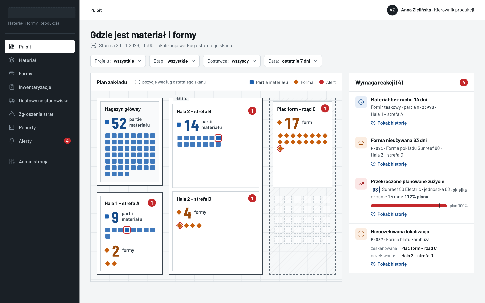
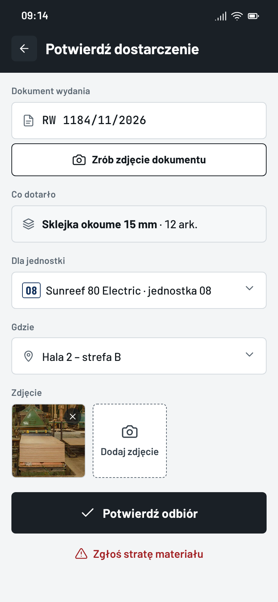
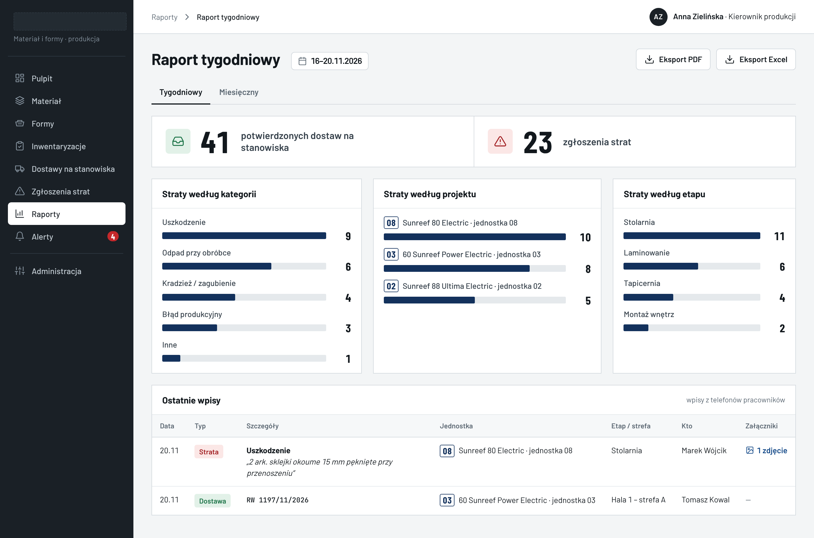
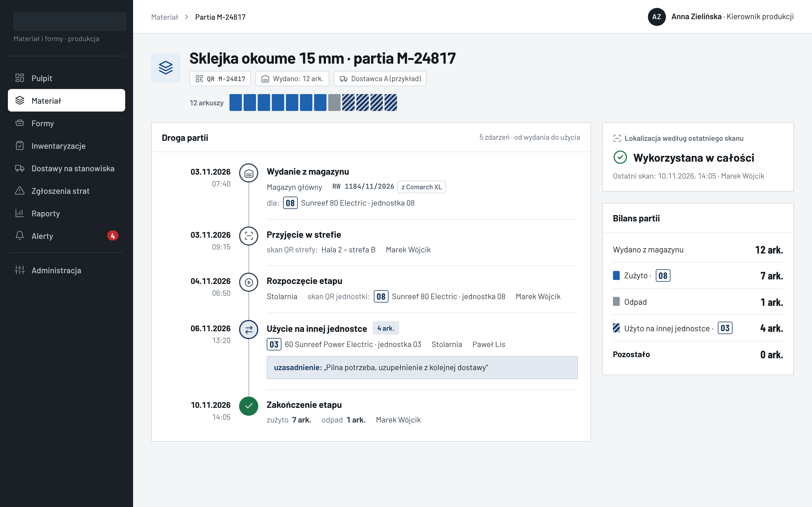
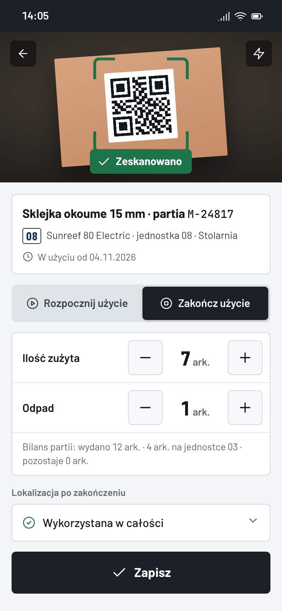
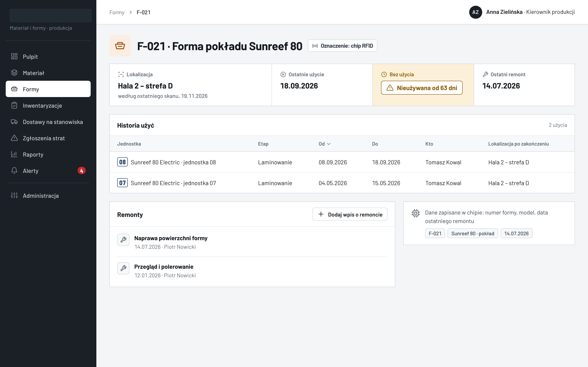
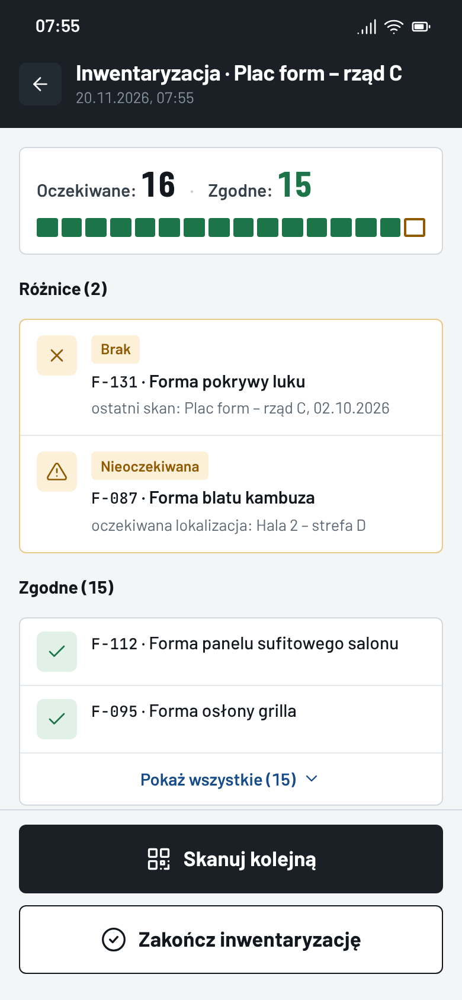

7 ekranów koncepcyjnych · dane przykładowe · stan na 20.11.2026







Zdjęcie na ekranie 2: „Sandakan Sabah Plywood-Factory-50” (fragment), CEphoto, Uwe Aranas, Wikimedia Commons, CC BY-SA 3.0.